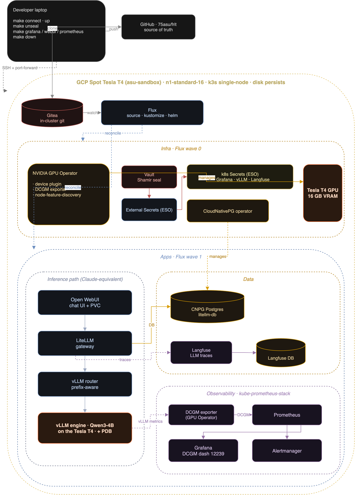
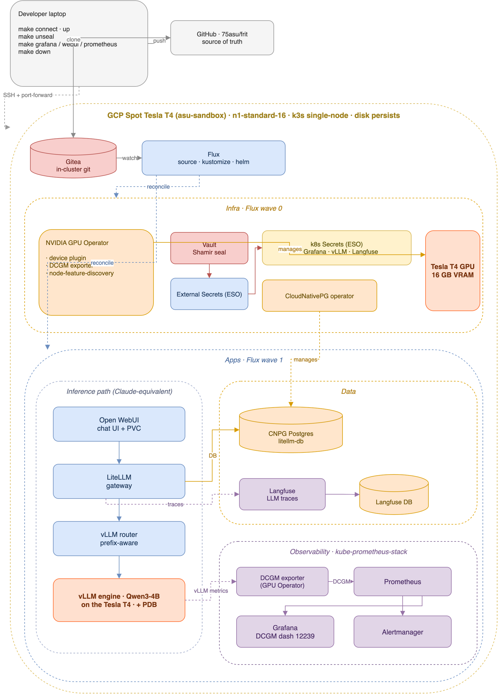

architecture
The whole stack on one Tesla T4, reconciled by Flux: laptop → GitHub → in-cluster Gitea → Flux, the inference path (Open WebUI → LiteLLM → vLLM / Ray Serve), a CNPG-backed data tier, Vault/ESO secrets, and the kube-prometheus observability stack.


source: docs/architecture.drawio